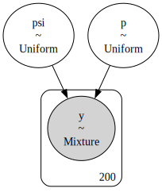
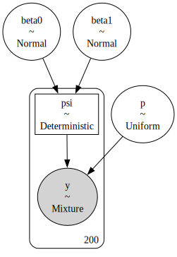
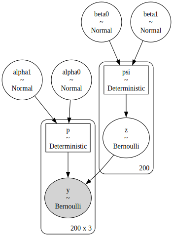
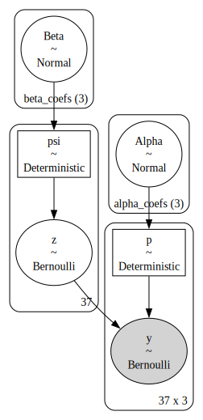
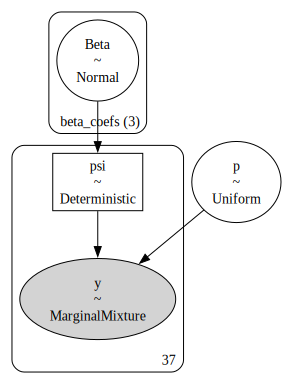
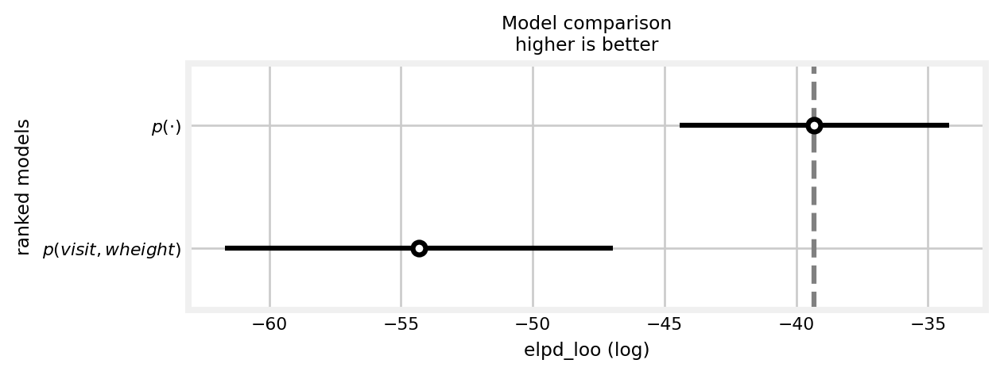

In this notebook, I demonstrate how to fit static site-occupancy models in PyMC (Royle and Dorazio 2008, chap. 3). The standard site-occupancy model models binary detection/non-detection data \(y_{j,k}\) for repeated surveys \(k=1,2,\dots,K\) at sites \(j=1,2,\dots,J.\) The species is present at the sites when \(z_j=1,\) and absent otherwise. We assume that our probability of detecting the species given that the site is occupied is \(P(y_{j,k}|z_j=1)=p,\) and zero when the site is unoccupied. The probability of occurrence, which is typically the parameter of interest, is \(P(z_{j}=1)=\psi.\) As such, we can think of this as a zero-inflated binomial model, where \[
\begin{align}
&y_j \sim
\begin{cases}
0, & \text{if } z_j = 0 \\
\text{Binomial}(K, p), & \text{if } z_j = 1
\end{cases} \\
&z_j \sim \text{Bernoulli}(\psi)
\end{align},
\] which assumes a constant occurrence probability across sites and a constant detection probability. I start with this simple model, then add site- and visit-level covariates later.
Simulated examples
To start, I demonstrate how to simulate this zero-inflated model using numpy. Throughout this section, I use hyperparameter values similar to those of Kéry and Schaub (2011).
# relevant librariesimport numpy as npimport pymc as pmimport arviz as azimport pandas as pdimport matplotlib.pyplot as plt# plotting stylesplt.rcParams['figure.dpi'] =600plt.style.use('fivethirtyeight')plt.rcParams['axes.facecolor'] ='white'plt.rcParams['figure.facecolor'] ='white'def scale(x):'''Scale x: 0 is the mean and 1 is one standard deviation from the mean.'''return (x - np.nanmean(x)) / np.nanstd(x)def invlogit(x):'''Compute inverse logit of x.'''return1/ (1+ np.exp(-x))def sim_y(p, z, site_count, visit_count):'''Simulate detections given detection probability p and occurrence state z.''' ones = np.ones((site_count, visit_count)) p_array = p * ones flips = rng.binomial(1, p_array) y = (flips.T * z_true).Treturn y ## simulationSEED =808rng = np.random.default_rng(seed=SEED)# sampling characteristicssite_count =200visit_count =3## ecological model# true parameter valuespsi_true =0.8# simulate occurrence statez_true = rng.binomial(1, psi_true, size=site_count)## detection model# true parameter valuesp_true =0.5# simulate detectiony = sim_y(p_true, z_true, site_count, visit_count)# number of detections at each site y_summarized = y.sum(axis=1)# detection data at the first five sites y[:5]
Next, I use PyMC to train the occupancy model with the simulated data. First, similar to JAGS and Stan, the model must be specified using the PyMC syntax. This is done using a context manager in Python, essentially, a with statement. This creates a Model object.
with pm.Model() as constant:# priors for the detetion and occurrence probabilities\ psi = pm.Uniform('psi', 0, 1) p = pm.Uniform('p', 0, 1)# likelihood for the summarized data pm.ZeroInflatedBinomial('y', p=p, psi=psi, n=visit_count, observed=y_summarized)
In JAGS, the prior for \(p\) would be specified as p ~ dunif(0, 1). The PyMC equivalent is p = pm.Uniform('p', 0, 1). This could, alternatively, be specified as p = pm.Uniform('detection probability', 0, 1). For the likelihood, I use PyMC’s built-in ZeroInflatedBinomial distribution. We tell PyMC that this is an observed random variable by supplying data to the observed argument. PyMC also has handy tools for visualizing the model.
pm.model_to_graphviz(constant)

Figure 1: Visual representation of model \(p(\cdot)\psi(\cdot).\)MarginalMixture refers to the zero-inflated binomial distribution.
Now I can sample from the posterior. Again, I use the context manager, this time referring to the model by name. It’s typical to name the output with idata because, by default, PyMC returns an object of class InferenceData from the Arviz package. Arviz is similar to the coda package for R.
with constant: constant_idata = pm.sample()
Auto-assigning NUTS sampler...
Initializing NUTS using jitter+adapt_diag...
Multiprocess sampling (4 chains in 4 jobs)
NUTS: [psi, p]
Sampling 4 chains for 1_000 tune and 1_000 draw iterations (4_000 + 4_000 draws total) took 2 seconds.
PyMC will try to use the No-U-Turn Sampler (NUTS) whenever possible. As you can see, it samples the posterior quickly. I can plot the output using the az.plot_trace(), supplying the true values for \(p\) and \(\psi\) for comparizon. I can also look at a tabular summary using az.summary().
Figure 2: Traceplots for the \(p(\cdot)\psi(\cdot)\) model. The true parameter values are shown by vertical and horizontal lines.
az.summary(constant_idata)
mean
sd
hdi_3%
hdi_97%
mcse_mean
mcse_sd
ess_bulk
ess_tail
r_hat
psi
0.800
0.043
0.718
0.878
0.001
0.001
1971.0
2075.0
1.0
p
0.498
0.030
0.445
0.557
0.001
0.000
2356.0
2760.0
1.0
Adding site covariates
Next, I add in some realism by simulating a site-level covariate \(x\) that affects the occurrence probability. I model this effect with a logit-linear model, i.e., \(\psi_j=\text{logit}^{-1}(\beta_0 + \beta_1 x_j).\)
## ecological model# true parameter valuesbeta0_true =-1beta1_true =3# covariates x = scale(rng.uniform(size=site_count))# linear modelmu_true = beta0_true + beta1_true * xpsi_true = invlogit(mu_true)# simulate occurrence statez_true = rng.binomial(1, psi_true)## detection model# true parameter valuesp_true =0.75# simulate detectiony = sim_y(p_true, z_true, site_count, visit_count)# vector with the number of detections at each site y_summarized = y.sum(axis=1)# detection data at the first five sites y[:5]
Again, I specify the model with PyMC. Like JAGS, the random variables can be manipulated, as in a linear model with \(x_j.\) These behave like numpy arrays, meaning that vectorized operations and broadcasting are available. To monitor the output of these manipulations, use the pm.Deterministic class. In this case, I am monitoring the site level occurrence probability \(\psi_j.\)
with pm.Model() as psix:# occurrence process # priors beta0 = pm.Normal("beta0", mu=0, sigma=2) beta1 = pm.Normal("beta1", mu=0, sigma=2)# linear model mu = beta0 + beta1 * x psi = pm.Deterministic("psi", pm.math.invlogit(mu))# detection process# prior p = pm.Uniform('p', 0, 1)# likelihood for the summarized data pm.ZeroInflatedBinomial('y', p=p, psi=psi, n=visit_count, observed=y_summarized)pm.model_to_graphviz(psix)

Figure 3: Visual representation of model \(p(\cdot)\psi(x).\)MarginalMixture refers to the zero-inflated binomial distribution.
with psix: psix_idata = pm.sample()
Auto-assigning NUTS sampler...
Initializing NUTS using jitter+adapt_diag...
Multiprocess sampling (4 chains in 4 jobs)
NUTS: [beta0, beta1, p]
Sampling 4 chains for 1_000 tune and 1_000 draw iterations (4_000 + 4_000 draws total) took 3 seconds.
Our PyMC code will need to be a little uglier now. I could write the model in terms of the latent occurrence state \(z_j.\) The NUTS sampler, however, does not jive with discrete latent states. As such, PyMC will assign it to a binary Gibbs sampler by default, which works, albeit slowly.
Since I am impatient, I instead use the marginalized version of the model, that is, a model that does not include the discrete latent states. To do this in PyMC, I use the CustomDist class. This requires, first, defining the log probability of the distribution, logp, given the data and it’s parameters. We can write logp using the likelihood of the occupancy model, \[
P(\mathbf{y}_j)=
\begin{cases}
P(\mathbf{y}_j | z_j = 1)\; \psi_j \; + \; (1 - \psi_j), & \text{if } \mathbf{y}_j = \mathbf{0}\\
P(\mathbf{y}_j | z_j = 1)\; \psi_j, & \text{otherwise}
\end{cases}
\] where \(P(\mathbf{y}_j | z_j = 1) = \prod_j p_{j,k}^{y_{j,k}} (1-p_{j,k})^{(1-y_{j,k})}\)(Royle and Dorazio 2008). To do this in PyMC, I rely on the pm.math.switch function, which is like the ifelse() function in R or np.where().
def logp(value, p, psi):"""Log prob for binomial (constant p across occasions) scr""" binom = pm.Bernoulli.logp(value, p) bin_sum = pm.math.sum(binom, axis=1) bin_exp = pm.math.exp(bin_sum) res = pm.math.switch( value.sum(axis=1) >0, bin_exp * psi, bin_exp * psi + (1- psi) )return pm.math.log(res)
To use out logp, we specify it as an argument to the CustomDist class in our PyMC model. Note that we have to tell CustomDist the shape of the inputs and outputs have by way of the signature argument, so PyMC doesn’t get confused.
with pm.Model() as marginal:# occurrence process # priors beta0 = pm.Normal("beta0", mu=0, sigma=2) beta1 = pm.Normal("beta1", mu=0, sigma=2)# linear model mu = beta0 + beta1 * x psi = pm.Deterministic("psi", pm.math.invlogit(mu))# detection process# priors alpha0 = pm.Normal('alpha0', mu=0, sigma=2) alpha1 = pm.Normal('alpha1', mu=0, sigma=2)# linear model nu = alpha0 + alpha1 * w p = pm.Deterministic('p', pm.math.invlogit(nu))# the signature provides the shapes of the input and the output sig =f'({site_count}, {visit_count}), ({site_count}) -> ({site_count}, {visit_count})'# likelihood pm.CustomDist('y', p, psi, logp=logp, observed=y, signature=sig )pm.model_to_graphviz(marginal)

Figure 4: Visual representation of the \(p(w)\psi(w)\) model.
with marginal: marginal_idata = pm.sample()
Auto-assigning NUTS sampler...
Initializing NUTS using jitter+adapt_diag...
Multiprocess sampling (4 chains in 4 jobs)
NUTS: [beta0, beta1, alpha0, alpha1]
Sampling 4 chains for 1_000 tune and 1_000 draw iterations (4_000 + 4_000 draws total) took 3 seconds.
Finally, I demonstrate the model using a real data example. These data come from Henden et al. (2013), and were used as a demonstration in Hooten and Hefley (2019), Chapter 23. They represent detection/non-detection data of Willow Warblers from Finnmark, Norway. The \(J=27\) sites were sampled \(K=3\) times. Replicating the analysis in Box 23.7 in Hooten and Hefley (2019), I use two covariates for site: site area and willow tree height. Further, I use two covariates for visit: an indicator for the visit and willow tree height.
# read in the datadata = pd.read_csv('PlosOne-DataFinnmark.csv')# subset the data to select willow warbleris_warbler = data.Species =="Willow Warbler"Y = data.loc[is_warbler, ['Y05.1', 'Y05.2', 'Y05.3']].to_numpy()n, J = Y.shape# generate site covariate matrixsite_intercept = np.ones(n)pland = scale(data.loc[is_warbler, 'Pland']).to_numpy()wheight = scale(data.loc[is_warbler, 'wheight']).to_numpy()X = np.c_[site_intercept, pland, wheight]# generate visit covariate arrayvisit_int = np.ones_like(Y)visit_wheight = np.repeat(wheight, repeats=J).reshape(n, J)# indicates which visit this is [0, 1, 2, 0, ...]_, visit_indicator = np.indices(Y.shape)visit_indicator = scale(visit_indicator)W = np.stack((visit_int, visit_indicator, visit_wheight), axis=2)
This example uses an extremely handy feature of PyMC: coordinates. This allows us to specify a prior for each \(\alpha\) and \(\beta\) value in one line of code, using the dims argument in our prior distribution. The length of vector is implied by length of the list in coords.
coords = {"beta_coefs": ["Intercept", "Pland", 'Wheight'],"alpha_coefs": ["Intercept", "Visit", 'Wheight']}with pm.Model(coords=coords) as warbler:# occurrence process priors Beta = pm.Normal("Beta", mu=0, sigma=2, dims="beta_coefs")# linear model mu = pm.math.dot(X, Beta) psi = pm.Deterministic("psi", pm.math.invlogit(mu))# detection process priors Alpha = pm.Normal('Alpha', mu=0, sigma=2, dims='alpha_coefs')# linear model nu = pm.math.dot(W, Alpha) p = pm.Deterministic('p', pm.math.invlogit(nu)) sig =f'({n}, {J}), ({n}) -> ({n}, {J})'# likelihood pm.CustomDist('y', p, psi, logp=logp, observed=Y, signature=sig )pm.model_to_graphviz(warbler)

Figure 6: Visual representation of the willow warbler occupancy model.
Now the dimensionality of the prior distributions is clear, with (3) different priors specified for each random variable in the vectors \(\alpha\) and \(\beta\).
with warbler: warbler_idata = pm.sample(4000)
Auto-assigning NUTS sampler...
Initializing NUTS using jitter+adapt_diag...
Multiprocess sampling (4 chains in 4 jobs)
NUTS: [Beta, Alpha]
Sampling 4 chains for 1_000 tune and 4_000 draw iterations (4_000 + 16_000 draws total) took 6 seconds.
I upped the number of draw iterations to 4,000 per chain, 16,000 total, since this dataset includes real-world messiness. Nevertheless, sampling the posterior took only 6 seconds!
Figure 7: Traceplots from the willow warbler occupancy model. Estimates from Hooten and Hefley (2019) are shown by vertical and horizontal lines.
There is a high level of agreement between the two methods. While their algorithm was designed for teaching and interpretability, it is noteworthy that the PyMC model is 10x faster.
Arviz also produces forest plots for looking at effect sizes.
Figure 8: Forest plots from willow warbler occupancy model. ESS refers to the effective sample size.
Model comparison
PyMC also has handy tools for model comparison. I demonstrate these by fitting a model to the warbler data with a constant probability of detection.
Y_sum = Y.sum(axis=1)with pm.Model(coords=coords) as warbler_constantp:# occurrence process priors Beta = pm.Normal("Beta", mu=0, sigma=2, dims="beta_coefs")# linear model mu = pm.math.dot(X, Beta) psi = pm.Deterministic("psi", pm.math.invlogit(mu))# detection process priors p = pm.Uniform('p', 0, 1)# likelihood pm.ZeroInflatedBinomial('y', p=p, psi=psi, n=J, observed=Y_sum)pm.model_to_graphviz(warbler_constantp)

Figure 9: Visual representaion of the warbler occupancy model with constant \(p.\)
with warbler_constantp: warbler_constantp_idata = pm.sample(4000)
Auto-assigning NUTS sampler...
Initializing NUTS using jitter+adapt_diag...
Multiprocess sampling (4 chains in 4 jobs)
NUTS: [Beta, p]
Sampling 4 chains for 1_000 tune and 4_000 draw iterations (4_000 + 16_000 draws total) took 6 seconds.
Next, I caclculate the leave-one-out (loo) cross-validation score for each model (Vehtari, Gelman, and Gabry 2017). This involves first computing the log likelihood for each model.
with warbler: pm.compute_log_likelihood(warbler_idata)
This indicates that the \(p(\cdot)\) model is favored over the \(p(visit,wheight)\) model.
Arviz also generates plots for these comparisons.
az.plot_compare(df_comp_loo, insample_dev=False);

Figure 10: Comparison between the \(p(visit,wheight)\) and the \(p(\cdot)\) models in terms of loo.
%load_ext watermark%watermark -n -u -v -iv -w
Last updated: Mon Nov 25 2024
Python implementation: CPython
Python version : 3.12.7
IPython version : 8.29.0
pandas : 2.2.3
matplotlib: 3.9.2
numpy : 1.26.4
arviz : 0.20.0
pymc : 5.18.2
Watermark: 2.5.0
References
Henden, John-André, Nigel G Yoccoz, Rolf A Ims, and Knut Langeland. 2013. “How Spatial Variation in Areal Extent and Configuration of Labile Vegetation States Affect the Riparian Bird Community in Arctic Tundra.”PLoS One 8 (5): e63312.
Hooten, Mevin B, and Trevor Hefley. 2019. Bringing Bayesian Models to Life. CRC Press.
Kéry, Marc, and Michael Schaub. 2011. Bayesian Population Analysis Using WinBUGS: A Hierarchical Perspective. Academic Press.
Royle, J Andrew, and Robert M Dorazio. 2008. Hierarchical Modeling and Inference in Ecology: The Analysis of Data from Populations, Metapopulations and Communities. Elsevier.
Vehtari, Aki, Andrew Gelman, and Jonah Gabry. 2017. “Practical Bayesian Model Evaluation Using Leave-One-Out Cross-Validation and WAIC.”Statistics and Computing 27: 1413–32.